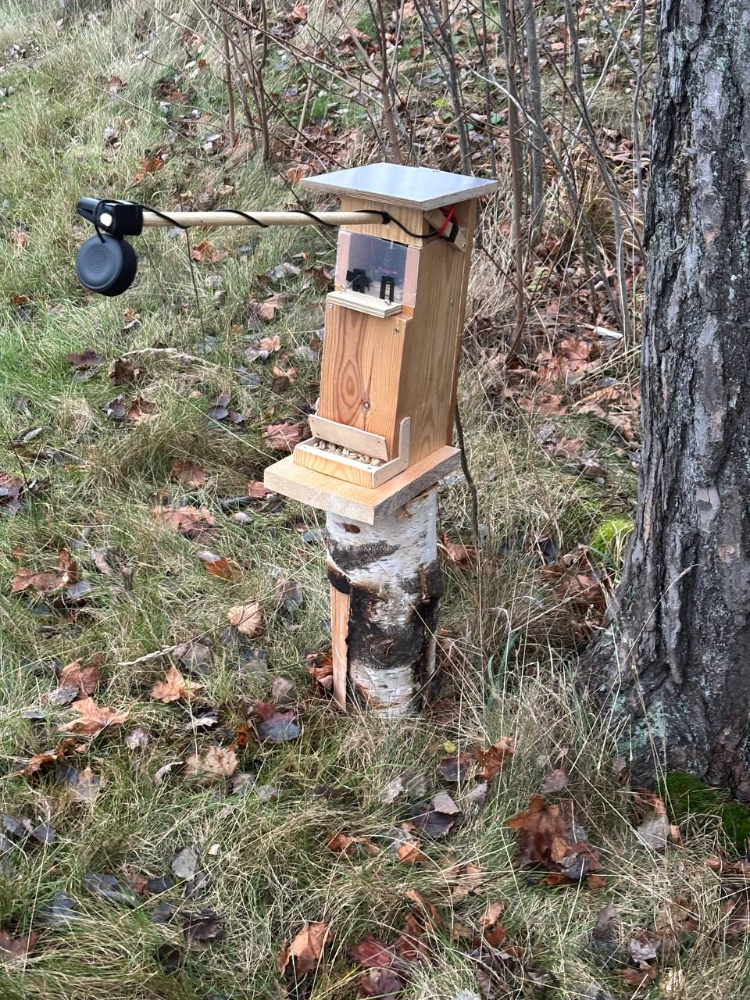
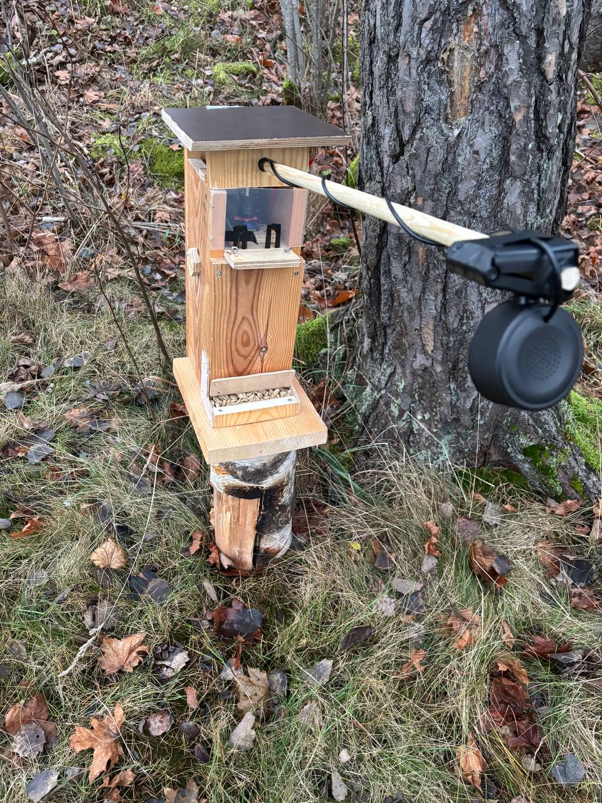
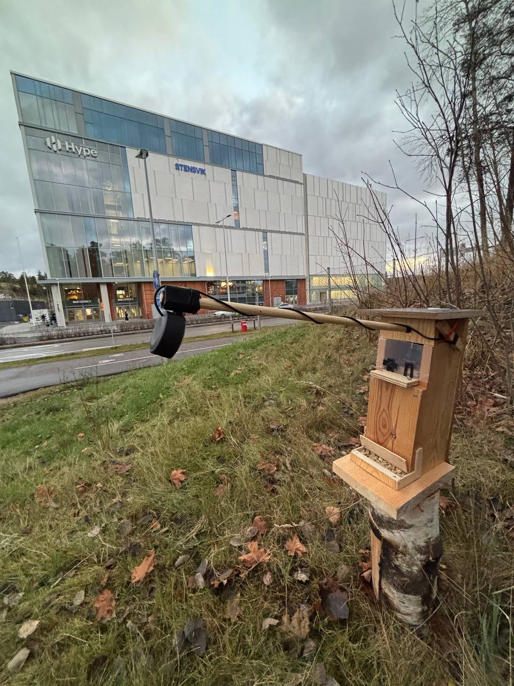
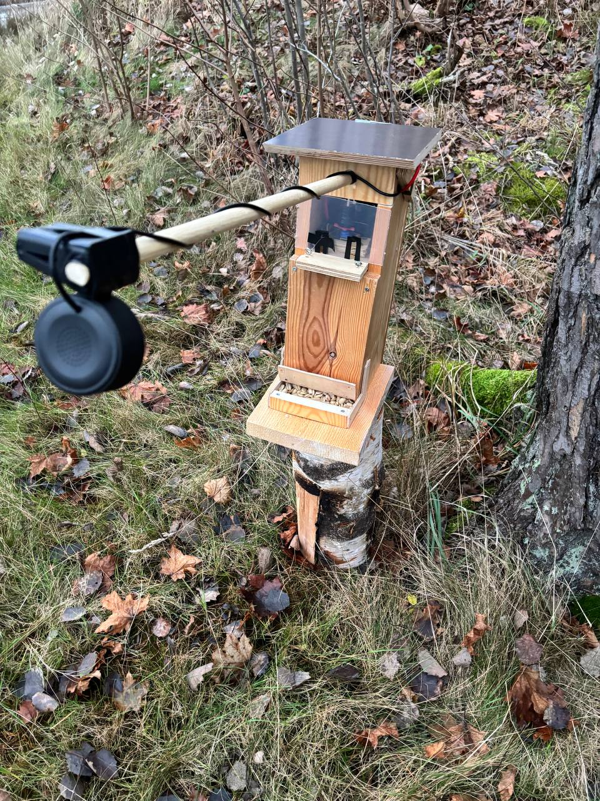

Team RBC · Junction 2026 · Arduino challenge
BirdAI
An Arduino bird sensor that counts feeder birds.
Basics
What
A feeder that counts its own birds using edge compute.
The prototype we built at Junction.
- Camera boom
- Roof
- Servo and wires
- Hatch and seed tray
- Birch stand

12345


Why
Winter is the blind spot.
Birds are a bioindicator: when their numbers change, the ecosystem around them has changed. The EU already tracks bird numbers as an official measure of biodiversity, but almost only in summer.
A network of these feeders could change that: daily winter counts from every feeder, counted the same way across Europe, with no volunteer and no form.
Eurostat 2026 · Fraixedas et al. 2020 · Luomus
How
One Arduino does it all.
Watches
A USB camera on a boom photographs the seed tray every 5 seconds.
Counts
A vision model on the Arduino UNO Q names 12 bird species in about 0.5 s per photo. A bird counts once it is in two photos in a row. Each species is recorded as the largest number seen at once.
Protects
A red squirrel in two photos in a row makes the servo pull the hatch shut. The hatch reopens after five clear photos, or by itself after 30 s if the program stops.
The AI
Why it runs on edge
The edge compute algorithm we built, running on the Arduino UNO Q.
Offline
No network needed.
Private
No photos leave the device.
Cheap
One board runs it all.
Fast
0.5 s per photo.
The model
Tested on 12 November 2026, 899 frames.
Implications
Separate sensors, linked into one network.
Each feeder sends a small table of counts. Put together, the tables show which birds winter where, day by day.
Illustration: sensors across Espoo. Bigger dot: more bird visits. Map data © OpenStreetMap contributors.

What the data is for
Map
See where each species spends the winter, feeder by feeder, and how that shifts from one winter to the next.
Compare
Every sensor counts by the rule Finland's national winter count uses, so numbers from different places and years can be compared.
Act
A drop in a species shows up within weeks, while there is still time to respond. Today it shows up after the next survey.
Who it is for
Researchers
Continuous winter data on bird populations, which hardly exists today.
Policy makers
A winter signal for the bird indicators the EU already uses to judge its biodiversity policy.
Everyone with a feeder
Any garden or schoolyard can become a monitoring station.
One feeder, one hour